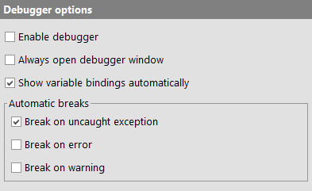

| Version 6.0.3 |
These options modify the behavior of the debugger.
|
|  | ||
|
| Figure 37.33: Debugger options | ||
By default the debugger is disabled unless this option, which can also be modified through the menu item »Debugger«-»Enable debugger«, is activated.
If a test is interrupted by a breakpoint or be pressing the "Pause" button, the debugger is activated automatically. Similarly, starting a test-run with "Step in" or "Step over" will activate the debugger for the duration of that test-run.
When test execution is halted and the debugger entered QF-Test can optionally open a separate window for the debugger. This option determines whether debugging should happen in a separate window or the normal test-suite window.
When test execution is halted and the debugger entered QF-Test can display the current variable bindings in the workbench window. If this option is active the variables are shown automatically each time a test-run first enters the debugger. Alternatively the variables can be viewed in the debugger window or shown in the workbench window via the menu »Debugger«-»Show variables«.
These options describe the situations in which execution of a test will be suspended and the debugger entered:
| Last update: 9/6/2022 Copyright © 1999-2022 Quality First Software GmbH |